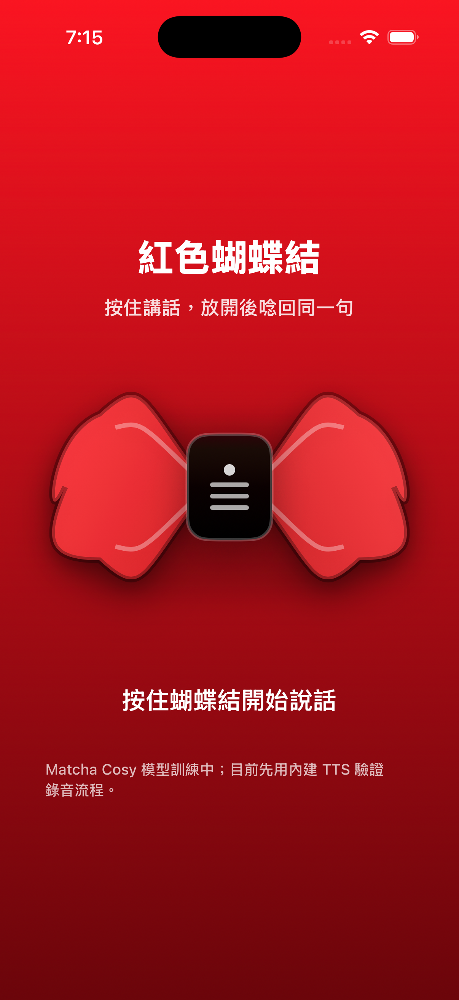

Matcha 抄 Cosy + 紅色蝴蝶結 App 串接
這版不是 placeholder：Matcha 已從前一顆中文 pinyin checkpoint 續訓到 15k step，資料來源是 CosyVoice2 golden teacher 的 500 句日常語料。
目前結論
- 老師
- CosyVoice2 golden teacher，代表句：「如果你愿意的话，我们等一下再一起确认一次。」
- 學生
- Matcha-TTS pinyin，18.2M params，checkpoint 約 209MB，模型權重估計約 72.8MB fp32。
- 訓練
- 從
matcha_indextts2_pinyin_long_v6_step10000續訓到14999step；finalloss/train_epoch=1.6106。 - 資料
- Cosy teacher 500 wav，train 484 / valid 16，總長約 46.3 分鐘。
- 推論設定
- Matcha 16-step，temperature 0.50，speaking-rate 0.90，pinyin
punct_tight；vocoder 用 HiFi-GAN T2。 - Mac CPU 速度
- 三句生成約 0.58-0.63 秒，音訊 4.2-4.6 秒，RTF 約 0.14。
試聽
日常安撫
你先不要急，我们慢慢来，把事情一件一件处理好。
生成 0.633s；音訊 4.284s；RTF 0.148。
自然回覆
我刚刚看了一下，应该不是你的问题，你不用太担心。
生成 0.630s；音訊 4.563s；RTF 0.138。
溫柔陪伴
没关系啦，你先讲，我在这边听，真的不用紧张。
生成 0.579s；音訊 4.214s；RTF 0.137。
App 串接

我已經把 app default preset 改成 matcha-cosy-golden，並新增 RedBowAssets/Models/MatchaCosyGolden/model-pack.json。
目前這個 model pack 明確標成 available:false，所以 app 不會假裝手機已能 native 跑 Matcha。畫面會顯示「Matcha Cosy 模型訓練中；目前先用內建 TTS 驗證錄音流程」。
等 Matcha 匯出成 ONNX/CoreML + mobile vocoder 後，只要把檔案放進同一個 MatchaCosyGolden 目錄並把 available 改成 true，app 的錄音回呼就會走模型合成，不再 fallback 到 iOS 內建 TTS。
下一步
這顆聲音如果聽感 OK，下一步是做 mobile package：Matcha acoustic model 匯出、vocoder 選 HiFi-GAN Univ 或更小 HiFi-GAN、iOS native runtime 接進 VoiceEngine。Matcha 這條路的速度明顯比 ZipVoice 降 step 穩，但自然度與像不像 Cosy 要用試聽先過關。